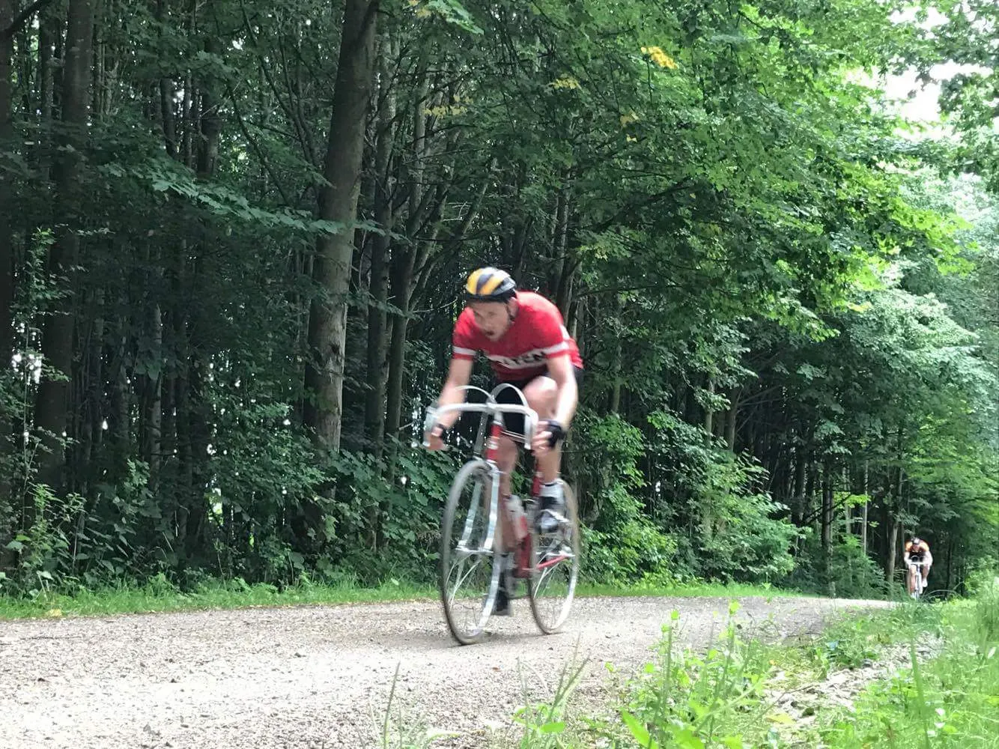
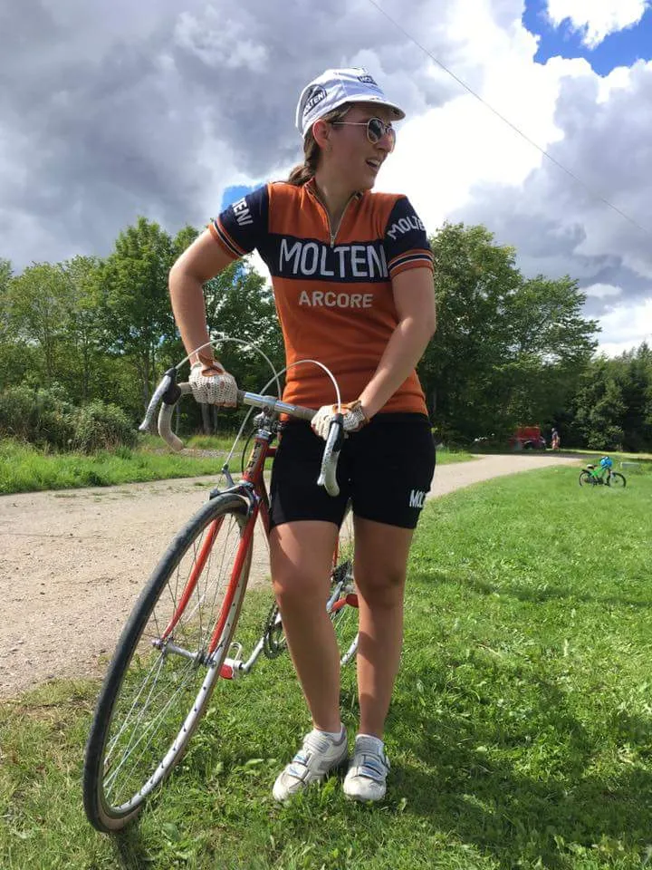

Kroppedal Grand Prix 2017

Det blev til en dobbelttriumf til Squadra Molteni ved Kroppedal Grand Prix 2017. Mark Pedersen kom først over målstregen – og Donna Maria Winther kom i mål som hurtigste kvinde.
Henrik Seidenfaden & Co leverede endnu engang et fantastisk arrangement, hvor der var tænkt på det hele: god rute , god rulletur – og ræs for dem der ville dét, lækker mad, god stemning og dejlige mennesker.
Squadra Molteni stillede til start med sidste års hurtigste og retro-danmarksmester – sidste års vinder Mark Pedersen, Kaptajn Niels Bjørnsteen, Løjtnant Kasper Sørensen, Jens Langergaard og stagiaire Kristian Blume.

Starten gik. Jens og Kristian pakkede kaptajnen ind. Kristian tog derefter en føring på godt 25 km og lagde et hårdt tempo frem mod første passage af målområdet. Kristians arbejde var veludført – og han fik efter løbet fast kontrakt på holdet.
På opløbsbakken stak Mark Pedersen, Yeh’ns Dichie (Christiania) og Kasper Sørensen. Niels Bjørnsteen røg med på hjul af to forfølgere – så løbet var under kontrol.
Og så var det ellers same procedure as last year. Mark og Yeh’ns kørte væk – og Mark kunne for andet år trille først over målstregen. Kasper lå god 25 km. alene på 3. pladsen, men de to forfølgere med Kaptajn Bjørnsteen på slæb kørte Kasper ind kun 5 km før mål.

Tak til Henrik Seidenfaden & Co for en fantastisk dag.